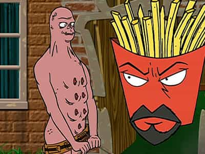
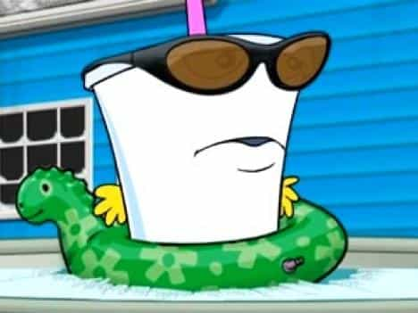
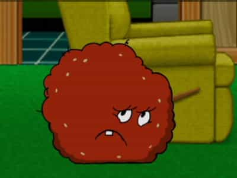
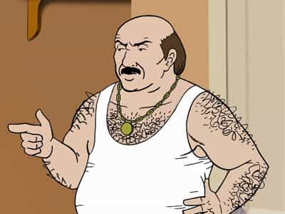
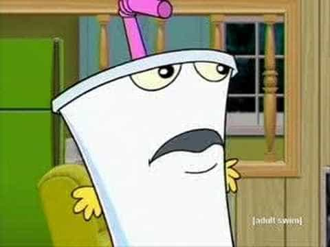

Aqua Teen Hunger Force is one of the original shows on Adult Swim on Cartoon Network. It is highly absurd, surreal and has some red-pill lessons about self-absorbed beta males.
The first three main characters—Frylock, Master Shake & Meatwad—all live in house together. The other main character is their neighbor, Carl. Initially, the show was about the Aqua Teens solving crimes, but it evolved into a sort-of Seinfeldian show about nothing.

The leader of the three, if you could call him that. He is very smart and if often battling with Shake over Shake’s treatment of Meatwad. He is a father-figure to Meatwad. Despite his intelligence and general level-headedness, he often displays some simpy behavior towards women. His bizarre behavior usually involves dealing with women.

A classic narcissist. He has little capacity for empathy and is often the funniest character on the show. Despite his incredible naiveté and cruel behavior, he often displays a modicum of intelligence and education. His insecurity is right below the surface, and is often exposed as it relates to his ability to be attractive to women. He spends most of his time watching TV in the living room, talking lots of shit about how awesome is he, playing cruel tricks on Meatwad and engaging in hare-brained schemes with Carl.

A classic codependent. He lies a lot about his life, but he doesn’t boast like Shake does. He is very dumb, but flashes ability to manipulate people – most especially Shake. He spends much of time in his room, playing with dolls and a cardboard box named “Boxy Brown.” He isn’t very compassionate, but isn’t mean all that often.

The next door neighbor of Aqua Teens. He is fat, hairy, and a loser. He lives in house by himself, worships the New York Giants and drinks lots of beer. He has an above-ground pool that is often a point of contention between the characters. He gets manipulated and burned by Shake in some episodes. He is very lonely and often has conflict with the Aqua Teens. The only one he has a level of respect for is Frylock. He has a car he affectionately named “2Wycked.”
Consider the psychological profiles first. Shake is an obvious narcissist and Meatwad is a codependent. However, you see how these roles can flip. In the episode Super Model, Shake travels to Guatemala to get some plastic surgery to enhance his appearance. Meatwad picks up on his serious insecurity relating to his looks and exploits it ruthlessly, giving him a bit of approval but withholding most of it, always suggesting he needs more work done. He shows how the roles can flip depending on the insecurities flashed by either party. The episode ends with Shake eating soup, depressed on the floor of Meatwad’s room. With Meatwad out in the living room, it highlights the pure role inversion – Meatwad is in Shake’s normal place, while Shake is in Meatwad’s normal place.
Carl is a stereotypical omega. He’s poor with a criminal record and nothing going on for him except watching porn, drinking beer and spending what little scratch he has on strippers and hookers. He has an incredibly poor relationship with both of his parents – some scenes show how cruel his father was to him – we see why his self-esteem is so low. While he flashes occasions where he really wants to change, he seems content to be stroking his cock in one hand, while downing beer in the other.
As for Frylock, he tries to stay above the fray of the two, often checking Shake’s cruelty. Often, though, he just lets it go as he knows there can be no good ending to their interactions. One episode has Frylock dressed in a bad costume in order to bed a human female. His insecurity relating to his attractiveness is on full display. Both Meatwad and Shake are dismissive of his concerns – they seem to be thinking “Here we go again.” Shake doesn’t antagonize Frylock too much, though, as he isn’t a target he can feel superior to on a continuous basis. Notice the dynamic here – Frylock at least tries in real life to get with women, but Shake it only concerned with his attractiveness to women in theory. That is a classic narcissistic trait.
The red pill analysis here is that these characters are varying archetypes of the “nice guy.” Frylock flashes the most potential – with his intelligence, social comportment and general ability to see the world for what it is. He is ham-strung because of his two friends, but I think he wants it that way. He sometimes tries to flee the situation – one episode he does – but he always comes back. On some level, he feels a paternal connection with all the other characters, as they need him. However he needs them, too. I get the feeling it is self-handicapping. Can’t change? Blame it on the fact you have a duty to Shake and Meatwad.
Shake is the quintessential narcissistic beta male. He is unattractive to women. Instead of self-handicapping or drinking himself to death, he lives in a world in his own mind. His outlandish shit talking is often hilarious, but speaks to a level of delusion. His incessant watching of TV reinforces this point. Such levels of media immersion are correlated to levels of narcissism, as you either identify or become envious of the characters. You start to live out lives you don’t get to in real life. With too much engagement in it, it can lead to blurring the lines between reality and fantasy.

Shake displays this greatly, as he is able to cough up all sorts of information on movies and TV shows – all fictional characters. As for Carl, he engages in a form of narcissism as he watches porn constantly and is a drunk. Alcoholism is a form of narcissism, as is constant viewing of porn – as you are fantasizing about fucking those women instead of learning to fuck them in real life.
This is the reality of the beta male in modern society. Unable to come to terms with the sexual revolution, hypergamy and social decline, they check out and live lives in their own heads. When women talk about guys far overplaying their hand, such as on dating sites, they are right sometimes. Sometimes it is self-handicapping (intentionally picking women that far outstrip your SMV) or just plain thirstiness.
The thirst of a beta male isn’t just sexual – it reflects the desire for female approval. Unable to get that positive attention as a child, they act it out through their sexuality. They may white-knight for female friends, but the thirst gets most palpable when presented with a sexually attractive female. They are acting out failed relationships with their mother – “I should just able to offer myself and that should be good enough.” It reflects the stupid prevailing advice given to men, but it also has a level of immaturity to it. That line above is something a kid should be able to say to his mother and get unconditional love in return.
The show displays the lives of some low-status males. Often the show is surreal and has lots of blood, death and general debauchery. However, when presented with women, their hierarchies are flipped upside down. Suddenly the ball-busting Carl is a huge pussy. Think about it – if he just used some of that bluster and take-no-shit attitude (although he does put up with a lot shit from the Aqua Teens) with women, he would able to get some female attention.
However, none the characters have the ability to change. The Aqua Teens supposedly moved to Seattle from the Jersey shore, but in the same house with Carl next door. Doesn’t matter what they do, they are trapped in their lives. They have the same recurring antagonists, the same recurring issues. It shows how stagnant our society is, reflected through the machinations of a fry box, milkshake and a wad of meat. Its’ a great show that is often hilarious (watch it high if you want a good ab workout), with some interesting social commentary that epitomizes the beta males of America.